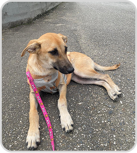

Mavie ♀
Cachorro | Fêmea | Porte G
DESCRIÇÃO:
Mavie foi encontrada junto com sua irmã, Maia, abandonada em Brusque.
Foram resgatadas e agora Mavie precisa de um lar com muito espaço, amor e carinho. É
super carinhosa e protetora!!
Castrada e Vacinada.
Castrada e Vacinada.